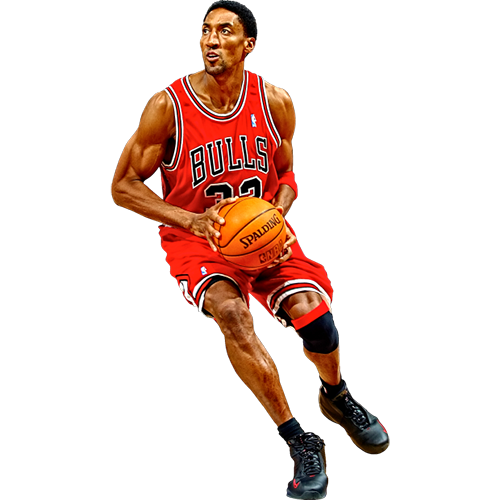

How Jordan Brand Is Stepping Out of Michael Jordan’s Shadow

He was a young black man when he first inked the deal with Nike, becoming the face of a brand that he co-owned, operating as the CEO of a company that created shoes to his specifications and had around him an entire apparatus to make it a global success. In the mid-1980s he had few peers but opened the door, and sparked the imaginations and hopes of millions. Each one of the sneakers he wore during his time in the game is a part of that history and therefore has a sacredness to it.
“Michael Jordan himself might be the singular most important person that impacted my personal motivation,” says Virgil Abloh. “His drive, his will to succeed and his achievements seemed out of this world and yet he achieved them. He did all that in really cool shoes to boot.”
But these stories are only as valuable as they are alive, and Wong and Abloh–along with other collaborators—are doing what they can to keep them alive.